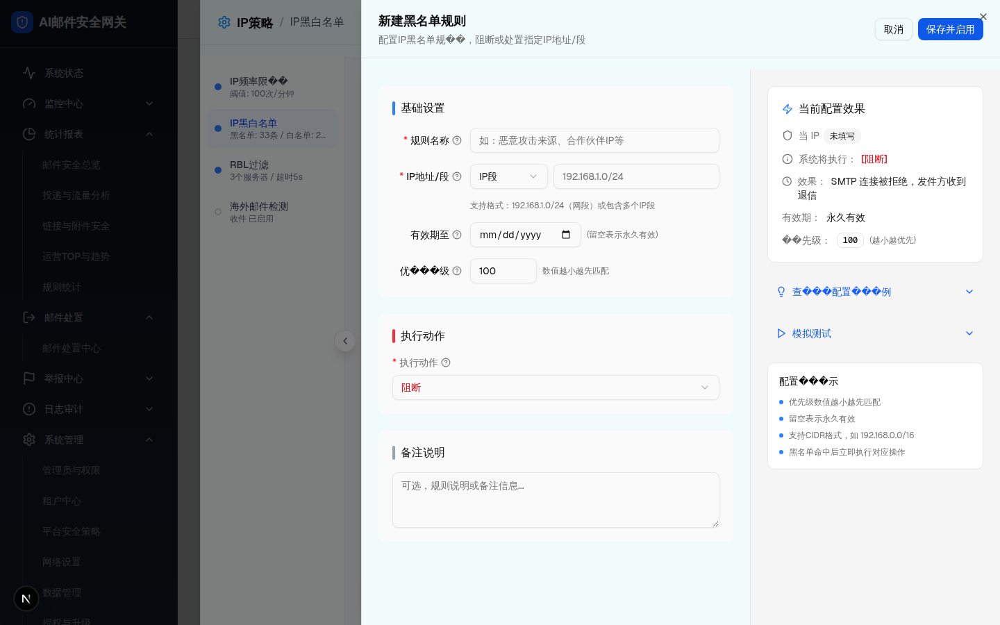

| 触发路径 | 层级4 -> 点击“执行动作” Select |
| 截图证据 | screenshots/03e-action-dropdown.png |
| 主文件 | index.html#dialog-3-2 |
| 名单类型 | 动作选项 | 业务含义 |
|---|---|---|
| 黑名单 | 隔离、审核、阻断、丢弃 | 命中黑名单后进入处置、审核、拒绝或静默丢弃分支 |
| 白名单 | 投递、标记投递 | 命中白名单后直接放行或加标后继续检测 |

| 比对项 | demo 实际 DOM | 提取/还原 HTML | 是否一致 |
|---|---|---|---|
| 黑名单选项 | 隔离、审核、阻断、丢弃 | blacklistActions 同集合 | 一致 |
| 白名单选项 | 投递、标记投递 | whitelistActions 同集合 | 一致 |
| 浮层视觉 | Radix/Select 弹层浮在表单上方 | 子文件用截图记录实际浮层；主文件 HTML 预览用原生 select 表达选项 | 截图兜底 |